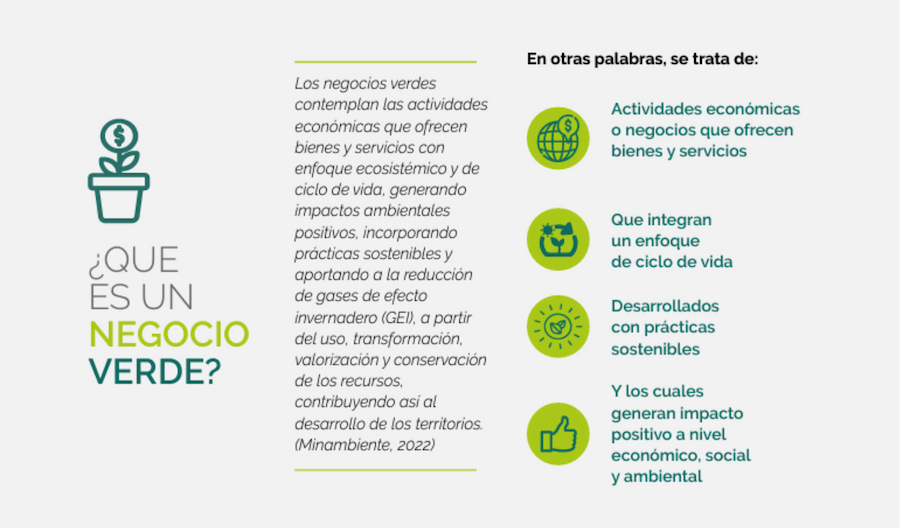
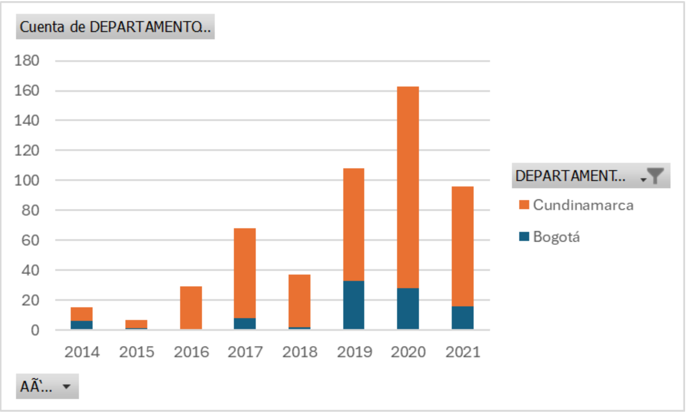
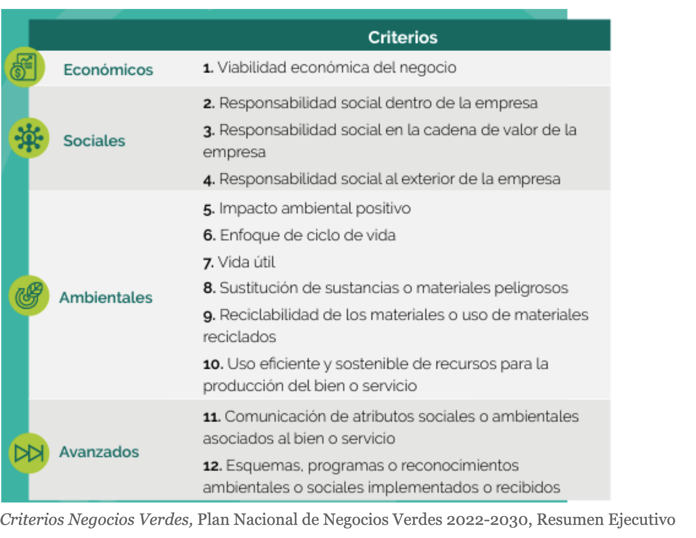

Por Jesús Barreto, Nataly Cotes y Camila Granados
En Tenjo, a una hora de Bogotá, María Luisa Hincapie y Luis Carlos
Piña, dos apasionados por las orquídeas, administran Forest of
Orchids, una reserva natural dedicada a la conservación y el
turismo. Llegaron 25 años atrás, a un bosque afectado por incendios.
Entre caminos llenos de arena, piedras y arcilla, iniciaron un
proceso de restauración ecológica para devolver el color a todo el
territorio desprovisto de vida.
Conforme la siembra de árboles y plantas nativas empezó a dar
frutos, decidieron compartir el proceso con otras personas
interesadas en el turismo científico. Pero esto no era suficiente,
así que abrieron sus puertas a un público más amplio con el objetivo
de hacer que el turismo aporte más de lo que da. Por eso, se
centraron en el turismo regenerativo, el cual no se enfoca
únicamente en ser sostenible, también se interesa mejorar
continuamente el territorio, para dejarlo en mejores condiciones de
las que se encontraba. Y fue de esta manera como la Corporación
Autónoma Regional de Cundinamarca (CAR) les otorgó el reconocimiento
de negocio verde en el 2020.
En los últimos años, Bogotá y Cundinamarca han sido testigos de un
crecimiento notable en un tipo de emprendimiento que no solo busca
el éxito económico, sino también la preservación del ambiente y el
bienestar social: los negocios verdes. Estos emprendimientos, que ya
son más de 500 en Bogotá y Cundinamarca, están surgiendo en diversos
sectores de la economía, desde la agricultura hasta el turismo, y
están cambiando la forma en que entendemos el mundo empresarial.
Los negocios verdes se caracterizan por su enfoque en la
sostenibilidad, lo que implica que sus actividades comerciales se
desarrollan de manera ambientalmente responsable, socialmente
inclusiva y económicamente viable. Según el Ministerio de Ambiente y
Desarrollo Sostenible, este enfoque se traduce en la adopción de
prácticas empresariales que reducen el impacto ambiental, promueven
la equidad social y generan beneficios económicos a largo plazo.

El auge de los negocios verdes
De acuerdo con cifras del Ministerio de Ambiente, hubo un aumento
significativo de certificaciones en negocios verdes dentro de Bogotá
y Cundinamarca durante la pandemia del covid-19. Pasaron de 108
certificaciones nuevas en 2019, a 163, en el 2020. El origen de este
aumento tiene diferentes explicaciones.

Según Edwin Maldonado, economista y experto en sostenibilidad
empresarial, la emergencia sanitaria del 2020 impulsó la compra de
productos verdes. En palabras de Maldonado, “el Ministerio de
Ambiente y Desarrollo Sostenible y la Oficina de Negocios Verdes
invitaron a los colombianos a darle prioridad a la compra de
productos verdes con un enfoque agroecológico, transformados para la
alimentación, para el aseo o relacionados con procesos de la
economía circular”.
Este aumento también se relaciona con un cambio en la conciencia
empresarial. Para Maldonado, las organizaciones tienen un mayor
interés en acreditar un manejo óptimo del medio, esto con el fin de
llegar a nuevos mercados, especialmente extranjeros.
El ecosistema de los negocios verdes
Los proyectos sostenibles pueden serlo desde diferentes sectores.
Ricardo Bareño produce chocolate artesanal y tiene su propia
chocolatería. María Luisa y Luis Carlos crearon una reserva natural
ecoturistica. Cuando se refiere a negocios verdes, no respecta
únicamente a productos de material reciclado, al contrario, esta
categoría es solo una de las 15 establecidas por el Ministerio de
Ambiente y Desarrollo Sostenible.
En Bogotá y Cundinamarca, los sectores que dominan la producción de
negocios verdes son, respectivamente: alimentos y bebidas, arte y
moda sostenible, y turismo sostenible.
En el caso de la primera categoría, alimentos y bebidas, Maldonado
afirma que esto se debe a “la vocación agrícola” que existe en
Colombia. > Además, al clasificarse como negocio verde, los
agricultores “tienen la oportunidad de valorizar sus productos,
obteniendo un mayor ingreso”. Algunos de los alimentos más vendidos
son café y hortalizas, aunque también se comercializa panela, cacao.
Ricardo Bareño, campesino del Santander, llevaba trabajando 12 años
como guarda en Bogotá. Al mismo tiempo, estaba estudiando
Administración de Empresas. Fue ahí donde, como en una actividad de
clase, surgió la idea de crear un proyecto de chocolatería
artesanal. Esa idea se volvería realidad en el 2018 con la creación
de Zurych, una empresa familiar que ofrece productos de cacao para
los hogares y las industrias desde Bogotá.
“Es muy satisfactorio poder desarrollar un tipo de emprendimiento
como estos, que no solo lo beneficia uno como emprendedor, sino que
tiene beneficios para diferentes personas y para el medio ambiente”,
Ricardo Bareño, fundador del Negocio Verde, Zurych.
Cómo ser un Negocio Verde
Para Bareño, siempre fue claro que Zurych sería una empresa
sostenible, “Yo creo que eso ya debe estar en nuestro ADN, cuidar el
medio ambiente. Pues porque si no lo cuidamos, él no nos va a cuidar
a nosotros en el futuro”. Sus cultivos son libres de agroquímicos
(como pesticidas y fertilizantes sintéticos), manejan empaques
sostenibles y procesos de economía circular— utilizan al máximo
todos los productos derivados del cacao. Con la cascarilla de cacao,
normalmente desperdicio en las fincas cacaoteras, hacen cerveza e
infusiones. Con la pulpa, que comía de niño en las fincas, hacen
helado y limonada. Lo demás es compostado, pero nada va a la basura.
No fue hasta dos años después del inicio del negocio cuando, en el
2020, fue contactado por la Oficina de Negocios Verdes para empezar
el proceso de evaluación. Examinaron todo el proceso, desde la
transformación de la materia prima hasta el proceso de
comercialización, y determinaron que cumplían con los parámetros
mínimos medioambientales para ser un negocio verde.

Seis años después de su creación y cuatro de su certificación como
negocio verde, Zurych tiene un local justo al lado del parque
Virgilio Barco, donde sus clientes recurrentes son los deportistas
que van después de su entrenamiento y la comunidad retirada del
vecindario. Siguen produciendo chocolate y productos de chocolate
industrial y comercial. Ahora cuenta con la ayuda de su hijo de dos
años, modelo oficial de Zurych y amante del chocolate. En otros seis
años, Ricardo espera tener más locales en todo Bogotá, chocolaterías
artesanales de alta calidad y accesibles a los colombianos. Quiere
elevar el chocolate, que lo vean como más que una golosina,
“¿Para mí que representa Zurych? La oportunidad de crecimiento
personal, la oportunidad de crecimiento familiar y el cambio” dice
Ricardo. “El cambio de vida que lleva. Pasar de ser guarda seguridad
a ser empresario. Eso ha sido muy satisfactorio para mí. Y el
compromiso que tengo con nuestros empleados y con los productores de
crecimiento y mantenernos en el tiempo, nos motiva cada día a seguir
creciendo”
Otro de los sectores con mayor registro de negocios verdes durante
el 2020 en Bogotá y Cundinamarca, es el turismo sostenible. Este
busca maximizar los beneficios económicos, sociales y ambientales,
tanto para las comunidades locales como para los visitantes, al
tiempo que minimiza los impactos negativos en el medio ambiente.
Ese es el caso de Forest of Orchids, en Tenjo. Negocio verde en el
que desarrollan tours para la observación de la fauna y flora local.
Según su gerente, María Luisa Hincapié, “cualquier tour que se
realice ya lleva implícito el 20% de absorción de la huella de
carbón, que se genera durante la actividad y que se genera durante
los desplazamientos hacia Tenjo”. Esto se debe a todas las acciones
que realiza el negocio, por ejemplo: el uso de energía solar y
productos biodegradables, la recolección de aguas lluvias, la
transformación de residuos en compost, o el eximirse de usar
fungicidas, pesticidas e insecticidas.
En el 2020 aplicaron ante la CAR de Cundinamarca para hacer parte
del proyecto de Negocios Verdes. Tras unas visitas de inspección
realizadas por la entidad, obtuvieron el puntaje necesario, pasaron
a ser negocio verde y sostenible. Aunque, esta posición no es
vitalicia, la CAR realiza visitas anuales para confirmar que las
empresas sigan siendo sostenibles y continúen con la certificación.
Problemáticas, dificultades, riesgos de los negocios verdes
Los desafíos que enfrentan los negocios verdes en Colombia,
especialmente aquellos centrados en productos agrícolas, revelan una
serie de obstáculos únicos en el proceso de producción y
exportación. Según Ricardo Bareño, director de Chocolates Zurych,
una de las principales dificultades radica en la búsqueda de
materias primas que cumplan con los estándares requeridos para la
producción ecológica. Bareño explica que encontrar cacao libre de
pesticidas y fertilizantes sintéticos es particularmente desafiante
debido a su escasez y alto costo en el mercado colombiano.
Además de la escasez y los altos costos de las materias primas, los
empresarios verdes también se enfrentan a problemas significativos
al intentar exportar sus productos. Bareño destaca que las estrictas
certificaciones necesarias para la exportación son costosas y
representan una barrera adicional para el crecimiento comercial.
Esta situación contrasta fuertemente con las condiciones que
enfrentan los negocios convencionales, que pueden moverse más
ágilmente en el mercado internacional sin tales restricciones.
Los procesos burocráticos y los requisitos para obtener
certificaciones nacionales representan un desafío adicional para los
negocios verdes. Hincapié afirma que en el caso de Forest of
Orchids, las adaptaciones requeridas en las instalaciones de
producción para cumplir con las regulaciones son costosas y
prolongan los plazos de comercialización. Esta realidad burocrática
y regulatoria crea una carga financiera y operativa que limita la
capacidad de estos negocios para competir en igualdad de
condiciones.
Otro desafío relevante para los negocios verdes en Colombia es la
competencia desigual con los productos convencionales en términos de
precios. Los costos más altos asociados con la producción ecológica,
debido a la escasez y el costo de las materias primas certificadas,
hacen que los productos verdes tienden a ser más caros en el
mercado. Esto representa un obstáculo importante para atraer a los
consumidores que, en muchas ocasiones, priorizan el precio por
encima de las consideraciones ambientales. Esta disparidad económica
pone en desventaja a los negocios verdes y limita su capacidad para
alcanzar una amplia base de clientes y competir efectivamente en el
mercado nacional e internacional.
Tanto María Luisa Hincapié, como Ricardo Bareño consideran que
existe una la falta de apoyo y visibilidad de negocios verdes por
parte de las instituciones oficiales y la sociedad en general. La
falta de conciencia pública y el bajo respaldo institucional
dificultan aún más el desarrollo y la expansión de estos
emprendimientos ecológicos en Colombia. Esta falta de promoción y
apoyo limita las oportunidades de crecimiento y la adopción
generalizada de prácticas empresariales sostenibles en el país.
Top 10 juegos recomendados por Radiografía Informativa hechos en
Colombia:
- World War Doh
- Animal Fury Destination
- Ekko: Occlude The Void
- Decoherence
- Un Cabrón en Transmilenio
- Disnea
- Kori the Frog
- Ananias Fellowship Edition
- Kodety
- Warrior Rush